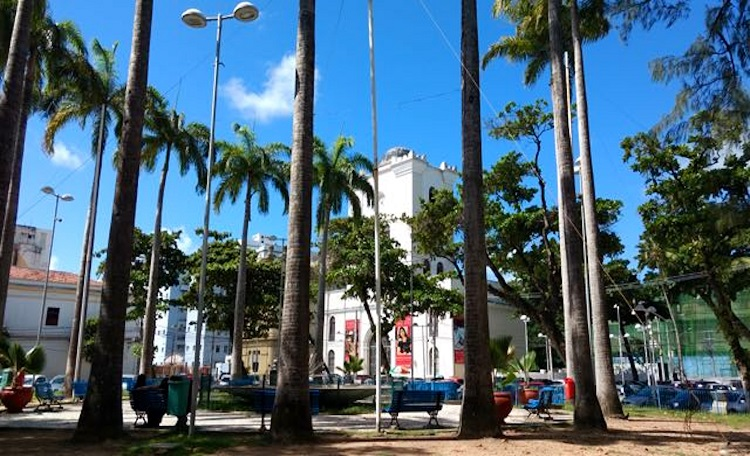

Museu Cais do Sertão
O Museu Cais do Sertão é um museu interativo que celebra a cultura do sertão nordestino. Ele oferece exposições e atividades educacionais que contam a história e as tradições do sertão. É um lugar fascinante para aprender mais sobre a cultura nordestina.

Praça do Arsenal
A Praça do Arsenal é um espaço público encantador no Recife Antigo. É cercada por prédios históricos, lojas, bares e restaurantes. É um lugar perfeito para passear, relaxar e desfrutar da arquitetura charmosa da região.
